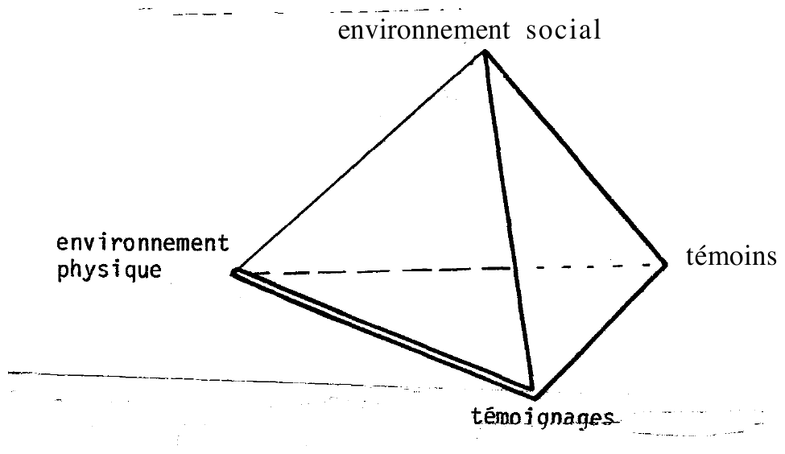

3.1. Principes généraux
Les données à analyser se présentent généralement sous la forme d'une série de plusieurs discours (au sens large :
textes écrits, déclarations orales, mais aussi gestes, dessins, intonations…) issus d'un ou plusieurs témoins. Mais chacun de ces discours est aussi un ensemble complexe d'éléments
d'information différents : par exemple les estimations de paramètres descriptifs (distance, forme, couleur…)
relatifs à un ou plusieurs phénomènes au cours d'une ou plusieurs phases d'observations.
A partir de la constatation de la complexité des informations contenues dans les témoignages, l'analyse va se fonder sur trois principes
généraux :
- Il est pratiquement impossible de mener une analyse globale sur un ensemble aussi complexe en étudiant
simultanément tous les éléments d'information de cet ensemble. On est donc conduit à essayer d'ordonner cet
ensemble pour pouvoir l'analyser. Cet ordonancement consistera à isoler dans chaque discours de chaque témoin les
éléments d'information relatifs, par exemple, aux paramètres descriptifs d'un phénomène ou d'une phase
d'information. On aboutit alors à une saisie matérielle des données suivant le schéma ci-dessous :
[Matrice de saisie des éléments d'information par discours]
| élément d'info. / discours |
Paramètres relatifs au premier phénomène |
Paramètres relatifs au deuxième phénomène |
… |
| Témoin N° 1 |
| | | |
| | | |
|
| … |
| | | |
| | | |
|
Bien entendu, il peut être difficile de construire une telle matrice à partir des seuls témoignages. Cette
construction pourra se modifier ou même n'apparaître clairement qu'au cours de l'analyse.
On trouve un exemple d'un tel ordonnancement des informations à la page 53
(exemple d'analyse de témoignage).
- L'analyse des informations de témoignages ainsi ordonnancée consistera à étudier la cohérence entre les
différents éléments (cohérence interne de chaque discours, cohérence entre les différents discours). Cette étude
utilisera les autres types d'information disponibles, susceptibles de mettre en évidence ou d'expliquer
d'éventuelles incohérences.
Ces autres informations disponibles sont :
- des renseignements d'ordre physique décrivant les circonstances des observations (topographie,
météorologie, etc.). Elles font partie de « l'environnement physique » et nous les appellerons extrinsèques
(au phénomène) pour ne pas les confondre avec les informations de traces (au sol, écho radar, etc.), pouvant être dues
éventuellement à une interaction du (ou des) phénomène(s) avec cet environnement (ces dernières informations
dites intrinsèques, ne seront prises en compte qu'après l'analyse des témoignages, pour confrontation et
synthèse finale).
- des informations d'ordre psychologique relatives aux témoins telles qu'elles ont pu être recueillies au
cours de l'enquête (voir plus haut) : attentes, présupposés, réactions
immédiates, interprétations, etc., mais aussi les informations concernant les niveaux de dépendances
éventuelles entre les témoins (processus d'influence).
Par rapport au schéma tétraédrique qui sert de guide méthodologique au GEPAN (BESSE et al, ), ces informations concernent le témoin et ses
relations avec son environnement psychosocial. Pour plus de clarté, nous les avons appelé « données de la
propension à la subjectivité ».
L'analyse va donc consister à confronter trois types d'information en essayant de déterminer les relations
existant entre leurs différents éléments. Dans le schéma tétraédrique, il s'agit d'explorer les relations entre
un pôle d'information (témoignage), une partie d'un autre pôle (environnement physique, données extrinsèques)
et une partie des deux pôles restants et de l'axe qui les joint (attentes et réactions du témoin et influences
de l'environnement psychosocial)Bien entendu, il existe d'autres informations concernant le
pôle « témoin » qui peuvent être du plus grand intérêt, par exemple des informations d'ordre physiologiques,
telles que les capacités sensorielles (vue, ouie). Elles doivent intervenir dans l'analyse des témoignages
lorsqu'elles sont disponibles, mais nous ne discuterons pas leur utilisation pour ne pas alourdir l'exposé,
car il faudrait alors aborder la question du mode d'acquisition de ces données (test sensoriel) et tenir
compte de leur nature (plus déterministe) différente de celle (plus probabiliste) des données psychologiques
que nous discutons ici..
[Schéma tétraédrique du GEPAN : environnement social, environnement physique, témoins,
témoignages]

On peut noter le parallèle entre cette démarche centrée sur les relations entre les éléments d'informations
plus que sur les éléments eux-mêmes, et certaines théories de perception (PIAGET, par exemple) selon lesquelles si les récepteurs sensoriels « sentent » les
éléments, le processus perceptif, lui, « perçoit » les relations entre les éléments.
L'analyse des témoignages suit ainsi un processus qui permet au chercheur de « percevoir » les informations qui
y sont contenues.
- Bien que le processus doive être, par la force des choses, largement analytique, le résultat à atteindre sera
nécessairement synthétique, c'est-à-dire devra rendre compte des poids relatifs des différents éléments de
témoignages en explicitant les cohérences et les incohérences à l'aide des informations d'ordre physique et
psychologique.
Ceci devra donc conduire à une évaluation probabiliste des différents éléments d'information, étant entendu
qu'une probabilité différente pourra être attribuée à chacun d'eux (par exemple, un témoignage douteux ne
permet pas nécessairement d'éliminer les autres témoignages du même cas…).
Nous avons appelé cette probabilité associée en fin d'analyse à chaque élément d'information issu des
témoignages, la « présomption de subjectivité ». Ainsi, l'analyse conduit à un ou plusieurs scénarios dont
certains éléments pourront avoir une forte présomption de subjectivité, alors que pour d'autres elle restera
faible.
D'un point de vue pratique, il n'y a pas de technique standard, infaillible, qui permette d'aboutir à coup sûr
au type de résultat que nous venons d'énoncer. Il n'est pas certain non plus qu'existe pour chaque cas
d'observation un résultat unique (un « bon » résultat) pour les analyses que l'on peut mener. Dans certains
cas, les données d'ordre physique prendront une importance particulière (dans l'exemple
ci-après, elles permettent de localiser le phénomène par triangulation et de scinder les événements en
différentes phases). Dans d'autres, les données psychologiques permettront d'expliquer d'abondantes
contradictions (voir ESTERLE et al, ). Tout au plus, pourrons-nous donc
indiquer quelques lignes directrices sur la méthode à suivre, étant bien entendu que le schéma devra être
adapté à chaque cas particulier.
3.2. Schéma général d'analyse
A titre indicatif, l'analyse peut commencer par la cohérence interne de chaque témoignage (analyse des lignes de la
matrice décrite ci-dessus). Cette cohérence est étudiée en fonction des informations physiques extrinsèques
(conditions de visibilité, compatibilité des estimations de durée, distance, vitesse, etc.). Les incohérences
éventuelles sont examinées par rapport aux attentes particulières du témoin, de même que l'utilisation possible
d'un vocabulaire particulier.
Après étude de la cohérence interne, on peut examiner ensuite la cohérence inter-témoignage (analyse de la matrice
en colonnes). Là aussi, les incohérences sont à étudier par rapport aux conditions physiques d'observations, aux
attentes et réactions particulières des témoins, aux relations spécifiques qu'ils peuvent avoir eu entre eux (la
question du rôle de l'indépendance des témoins a été étudiée et sera discutée dans une Note Technique
ultérieure).
Ce travail étant fait, il faut ensuite considérer globalement les résultats pour voir si on a pu aboutir à une
explication complète de l'ensemble des données. Eventuellement apparaîtront alors des questions auxquelles l'analyse
n'aura pas répondu, et qui demanderont un réexamen particulier ou même général (y compris des modifications de la
matrice de départ). Le processus se poursuivra jusqu'à aboutir à un équilibre général où l'ensemble des données des
témoignages se trouvera expliqué par les informations disponibles (ce qui pourra demander parfois un complément
d'enquête). Aux différentes unités d'information (distance, forme, etc.) sera alors associé un jeu de pondérations
probabilistes permettant d'élaborer des hypothèses, ou scénarios, plus ou moins probables sur les événements à
l'origine des témoignages.
3.3. Modèles précédents
La technique d'analyse de témoignage que nous venons de présenter est cohérente avec la réflexion théorique qui le
précède. Elle est aussi le résultat d'une confrontation avec la pratique des enquêtes sur le terrain. A ce double
titre, elle fait suite à la technique utilisée précédemment dans les enquêtes du GEPAN, mise en place grâce aux
travaux de F. ASKEVIS. Nous rappelons les grandes lignes de
ce système d'analyse.
Ce système permettait de situer chaque cas d'observation, selon une échelle ordinale, dans un continuum de la
« probabilité pour que le cas auquel on avait affaire corresponde à une situation où les éléments subjectifs sont
réduits au minimum » (PESM).
Le PESM est évalué à l'aide d'un système composé de trois critères :
- multiplicité et concordance des témoignages ;
- indépendance des conditions d'observation (s'il y a plusieurs témoins) ;
- renforcement des croyances.
Le tableau ci-dessous représente les différentes modalités de chaque critère, et leurs articulations permettant de
classer les combinaisons des modalités dans le continuum du PESM.
[Critères C1 à C3 et leurs modalités A à G, et classement de leurs combinaisons selon le P.E.S.M.
croissant, de 1 à 6]
![Légende des critères (C1 : A témoin unique 0, B plusieurs témoins dont les observations concordent 2, C témoin unique avec confirmation partielle 1 ; C2 : D indépendance des conditions d'observation 2, non indépendance 1 ; C3 : renforcement des croyances préalables positives ou négatives quant à l'existence et/ou la nature des OVNI 1, G absence, maintien ou inversion de ces croyances 2), puis organigramme Récits, critère C1 (A, B, C), critère C2 (D, E), critère C3 (F, G), P.E.S.M. : 1 A+F, 2 C+F ou A+G, 3 C+G, 4 B+E+F, 5 B+D+F ou B+E+G, 6 B+D+G](fig2.png)
Cette technique, si elle permet essentiellement de comparer différents cas entre eux, souffre par contre d'un
manque de nuance qui rend difficile, voire impossible, la prise en compte des données lorsqu'elles sont multiples
(plusieurs témoins, différents discours, phases multiples d'observation). Dans ces cas, les critères risquent de
prendre des valeurs différentes selon les témoins ou les phases d'observation, par exemple.
Une appréciation globale comme celle du PESM est donc parfois délicate ou arbitraire.
Nous venons de proposer une technique d'analyse plus nuancée, en donnant plus de poids aux données relatives à
chaque témoin, à chaque élément, à chaque phase, ainsi qu'aux interactions qui peuvent exister entre eux.
Par contre, la technique du PESM reste toujours une alternative appropriée pour les cas d'observation simples, avec
par exemple un témoin unique et une phase unique d'observation. Mais on peut alors se demander dans quelle mesure il
vaut la peine d'entreprendre une étude de tels cas, puisque justement le chercheur est alors privé du matériau
permettant des analyses complexes de recoupement, confrontation, vérification de cohérences, etc.